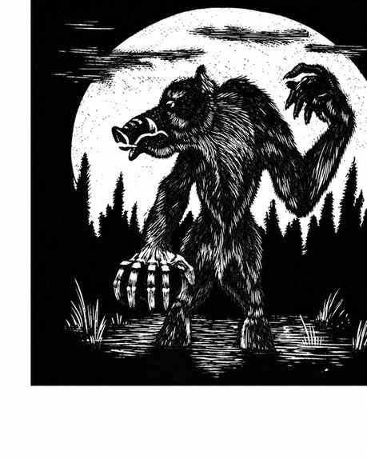
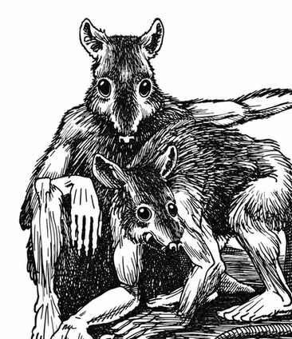
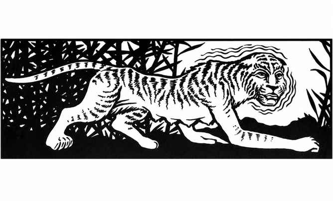
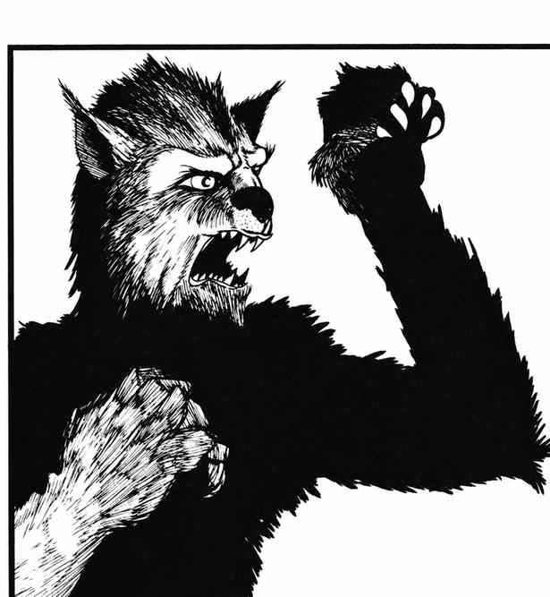
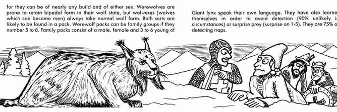

兽化人 · Lycanthrope
| 类型 | 遭遇 | AC | 移动 | HD | 巢穴 | 财宝 | 攻击／伤害 | 特殊规则 |
|---|---|---|---|---|---|---|---|---|
| 熊人 | 罕见；1–4 | 2 | 9 寸 | 7+3 | 10% | R、S、X | 3 次；1–3／1–3／2–8 | 擒抱造成 2–16；只受银或 +1 及以上魔法武器伤害 |
| 野猪人 | 罕见；2–8 | 4 | 12 寸 | 5+2 | 20% | B、S | 1 次；2–12 | 只受银或 +1 及以上魔法武器伤害 |
| 鼠人 | 不常见；4–24 | 6 | 12 寸 | 3+1 | 30% | C | 1 次；1–8（剑） | 生命骰 1–4 时突袭；只受银或 +1 及以上魔法武器伤害 |
| 虎人 | 极罕见；1–6 | 3 | 12 寸 | 6+2 | 15% | D、Q（×5） | 3 次；1–4／1–4／1–12 | 后爪撕抓追加 2 次，各造成 2–5；只受银或 +1 及以上魔法武器伤害 |
| 狼人 | 常见；3–18 | 5 | 15 寸 | 4+3 | 25% | B | 1 次；2–8 | 生命骰 1–3 时突袭；只受银或 +1 及以上魔法武器伤害 |
所有兽化人均有标准魔法抗性，也都不具备灵能。熊人阵营混乱善良，智力卓越，体型 L；野猪人中立，智力一般，体型 L；鼠人守序邪恶，智力极高，体型 S–M；虎人中立，智力一般，体型 L；狼人混乱邪恶，智力一般，体型 M。
兽化人是能够变成动物形态的人类。它们通常在黑暗时段变为兽形；满月期间，有 90% 概率被迫变成另一形态。它们通常以人类外貌活动，各自都有一种本族语言，并会说通用语。
任何类人生物若被兽化人咬伤，所受伤害达到其生命值上限的 50% 或以上，且没有被杀死并吃掉，就会感染兽化症。若受害者携带颠茄，并在一小时内服下，有 25% 概率治愈；但服用后会失去行动能力 1–4 天，且有 1% 概率因毒性死亡。否则，必须在三日内由至少 12 级的牧师领袖对其施展医疗疾病术；若未能及时治疗，受害者会在 7–14 天后成为兽化人。还有其他种类的兽化人，但极其罕见。
熊人 · Werebear

熊人是最强大的兽化人，出现时必为完全成年的个体。只有熊人有 50% 概率伴有 1–6 头棕熊。若一英里内有棕熊，熊人可在 2–12 轮内召来 1–6 头。它们变成的人形通常身材高大、毛发浓密，性情孤僻。熊人的伤口以正常速度三倍愈合，不会患病；若愿意，还能在 1–4 周内治愈另一生物的疾病。
野猪人 · Wereboar
野猪人生活在茂密林地及类似地区，脾气暴躁，容易主动攻击。人形时也通常易怒、暴躁，颇有狂战士的性情。野猪人很少与普通野猪混群（概率 15%）。
鼠人 · Wererat

鼠人有时也称鼠民，狡猾邪恶，居住在城市下方的地下隧道群中。它们有三种形态：人类、人高的鼠人，以及巨鼠；通常持剑。鼠人会以人形欺骗人类，把人引到埋伏地点后绑架勒索，或将其吃掉。它们更喜欢以介于人类与普通老鼠之间大小的鼠形活动。鼠人还能召唤并控制巨鼠，每只鼠人可控制 2–12 只。
虎人 · Weretiger

虎人的栖息习性与普通老虎相似，通常为雌性。它们只有 5% 概率与普通虎群混居。不过，虎人能够与各种猫科动物交谈；因此猫科动物有 75% 概率会对虎人友善。
狼人 · Werewolf


狼人以人形出现时很难辨认，因为体格与性别几乎不受限制。狼形狼人往往仍保持双足姿态，而能够化为人形的狼则始终采取普通狼的形态。两类狼人都可能成群出现；若狼人家族群有 5–8 只，通常由一对成年狼人和 3–6 只幼崽组成。幼崽成长程度为 60%–90%；若雌性受攻击，雄性生命骰 +2 且每次命中造成全额伤害；若幼崽受攻击，雌性生命骰 +3 且每次命中造成可能的最高伤害。幼崽生命骰受 −4 至 −1 惩罚（依成熟程度而定），每次攻击造成 2–5 点伤害。